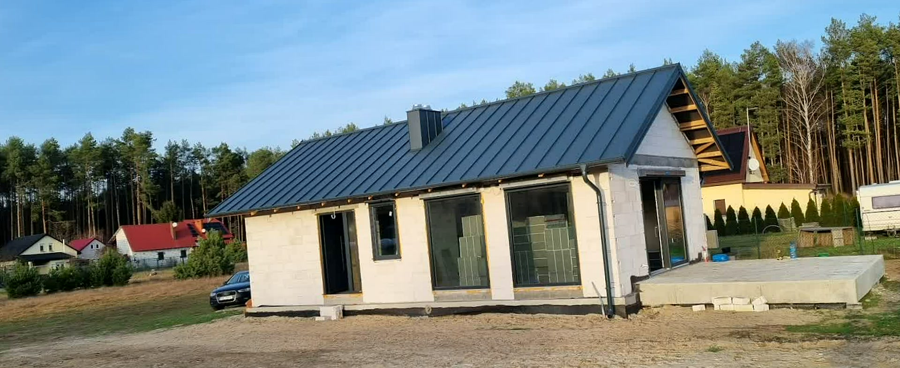
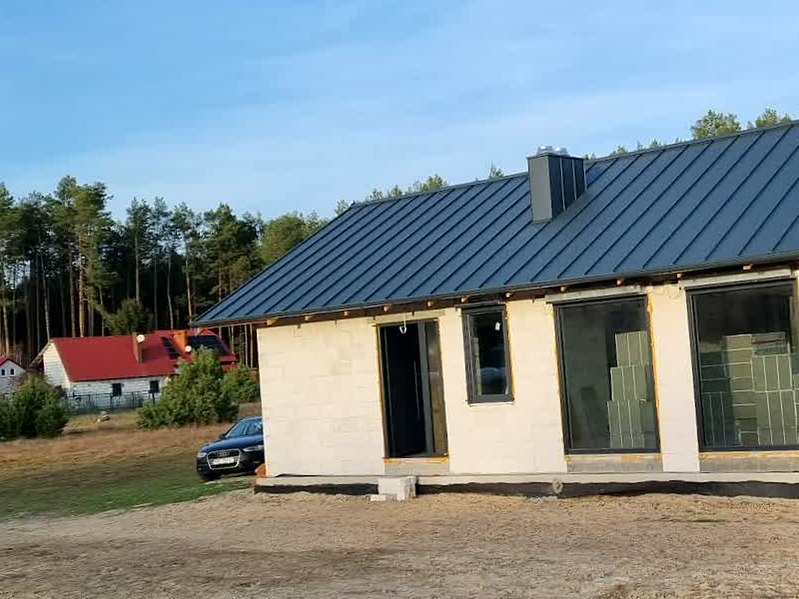
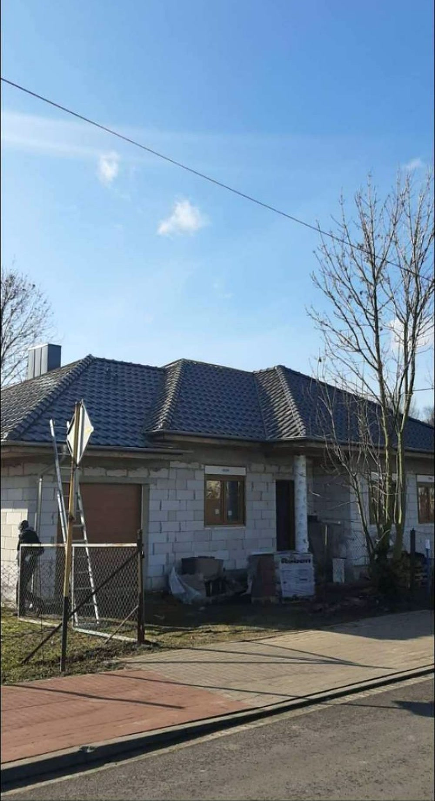
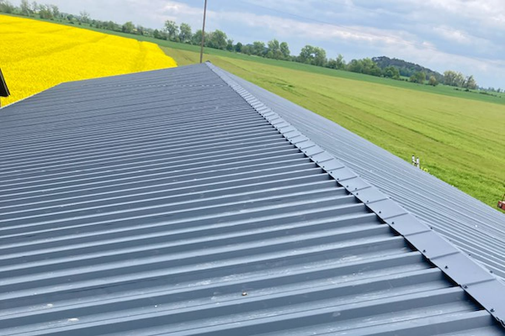
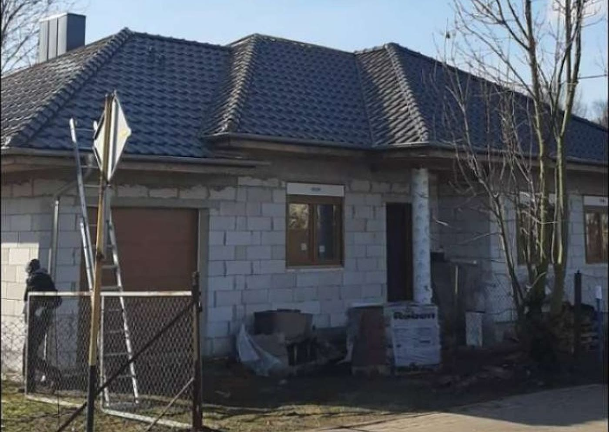
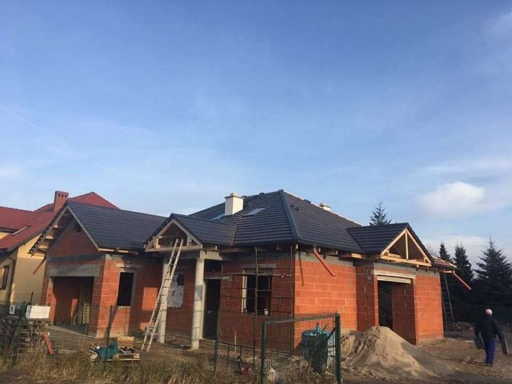

Dekarz w Opalenicy. Nowe dachy i remonty.
Ten rok mamy zabookowany - zapisujemy na sezon 2027. Jeśli planujesz dach na przyszły rok, ustalmy termin teraz.
Zapisy na 2027 +48 663 329 661- Ponad 20 lat na dachach
- Bezpłatna wycena
- Dojazd: Opalenica i okolice
- Gwarancja na robociznę
Wiesz, na czym stoisz - na każdym etapie
Od pierwszego telefonu do odbioru roboty - krok po kroku.
- 01
Dzwonisz
Telefon albo zdjęcie dachu. Po krótkiej rozmowie wiesz, czy przyjedziemy obejrzeć i w jakim terminie.
- 02
Pomiar i wycena
Wchodzimy na dach, mierzymy i robimy zdjęcia. Wycenę dostajesz na piśmie, rozbitą na pozycje - materiał osobno, robota osobno.
- 03
Robota
Materiał zamawiamy po zatwierdzeniu wyceny i pilnujemy dostawy. Z Twojego dachu schodzimy dopiero, jak jest skończony - nie w połowie na inną budowę.
- 04
Odbiór i gwarancja
Stare pokrycie jedzie na kontener, a Ty dostajesz gwarancję na robociznę - jak coś nie gra, wracamy i poprawiamy.
Zdjęcia z robót
Zdjęcia z naszych dachów, nie z katalogu producenta blachy. Tak wygląda skończona robota.





Co robimy
To, po co dzwonią do nas najczęściej. Szczegóły i ceny niżej.
- Pokrycia dachoweStare pokrycie do zdjęcia albo nowy dom czeka na dach? Kładziemy blachodachówkę, dachówkę ceramiczną i betonową oraz blachę na rąbek - z membraną, łatami i kontrłatami, nie samą blachę na stare deski.Wycena →
- Remonty i naprawy dachówDach ma swoje lata, ale rzadko wszystko naraz jest do wymiany. Przekładamy dachówkę, wymieniamy skorodowane kosze i obróbki, uzupełniamy łaty i membranę tam, gdzie faktycznie puściło.Wycena →
- Więźba dachowaStawiamy więźby pod nowe dachy i wzmacniamy stare, w których krokwie pamiętają lepsze czasy.Wycena →
- Rynny i obróbki blacharskieRynna przelewa się w jednym miejscu albo odchodzi od okapu? Ustawiamy spadki na nowo, wymieniamy skorodowane odcinki i poprawiamy mocowania, zamiast od razu sprzedawać całe orynnowanie.Wycena →
- Okna dachowe i podbitkaPodbitka zamyka dach od spodu: równa linia przy okapie, kratki wentylacyjne i koniec z ptakami pod pokryciem.Wycena →
- Dachy płaskie i papaGaraż, taras albo płaski dach nad domem? Zgrzewamy papę termozgrzewalną i układamy membrany z wyprowadzonymi spadkami, żeby woda nie stała w kałużach na środku.Wycena →
Co mówią klienci
Wpisz Zakład Blacharsko-Dekarski Dekarz Andrzej Sznytka w Google i przeczytaj opinie. Trzymamy je tam, gdzie nie możemy ich ani poprawić, ani skasować.
Dojeżdżamy do Ciebie
Najwięcej dachów robimy w Opalenicy i najbliższej okolicy: Nowy Tomyśl, Grodzisk Wielkopolski, Buk, Poznań. Sąsiednie miejscowości - kwestia jednego telefonu.
- Opalenica
- + okolice
Dobrze wiedzieć
Ile kosztuje nowy dach?
Najwięcej robi pokrycie i skomplikowanie bryły - dwa kominy i trzy lukarny to inna robota niż prosta dwuspadówka. Dlatego wyceniamy dopiero po wejściu na dach, za to na piśmie.
Czy pomiar i wycena są płatne?
Nie. Pomiar i wycena w Opalenicy i najbliższej okolicy są bezpłatne i do niczego nie zobowiązują.
Jak długo trwa wymiana dachu?
Typowy dom to zwykle tydzień, dwa - zależnie od pokrycia i pogody. Termin i czas roboty znasz przed startem, a o przesunięciu przez pogodę mówimy od razu, nie po fakcie.
Co ze starym pokryciem?
Rozbiórka i wywóz są w wycenie, chyba że umówimy się inaczej. Stary eternit oddajemy firmie z uprawnieniami do azbestu - tego nie wolno wywieźć byle gdzie i nie ma co ryzykować.
Czy dostanę fakturę?
Tak, na firmę albo prywatnie. Kwoty na fakturze zgadzają się z wyceną - żadnych pozycji dopisanych na koniec.
Co, jeśli dach przecieka po robocie?
Wracamy i sprawdzamy, gdzie puściło. Nasza robota - poprawiamy za darmo; przyczyna gdzie indziej - pokazujemy zdjęcia i mówimy, co z tym zrobić.
Potrzebujesz fachowca? Wycenimy za darmo.
Odezwij się - umówimy oględziny i usłyszysz konkretną kwotę. Za darmo.